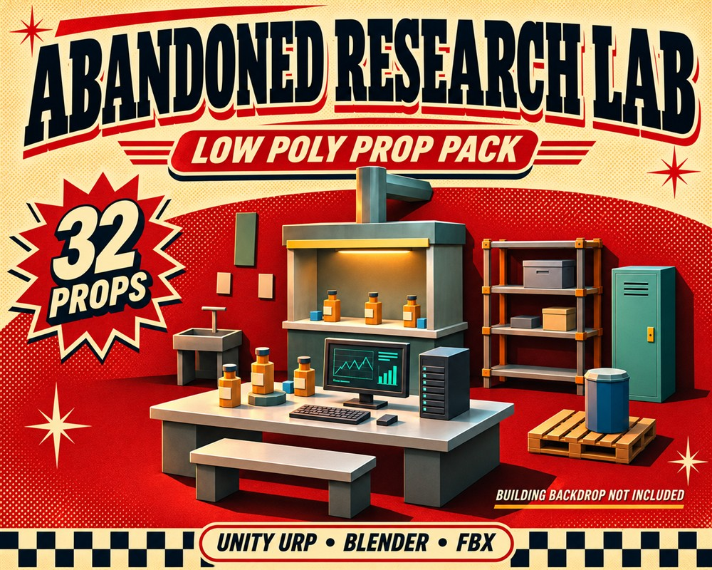
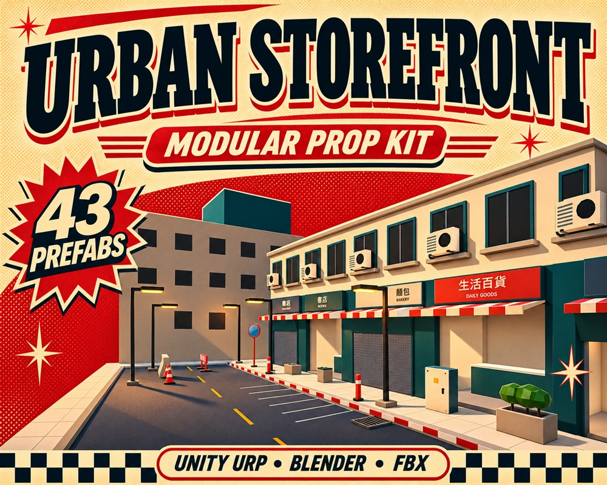
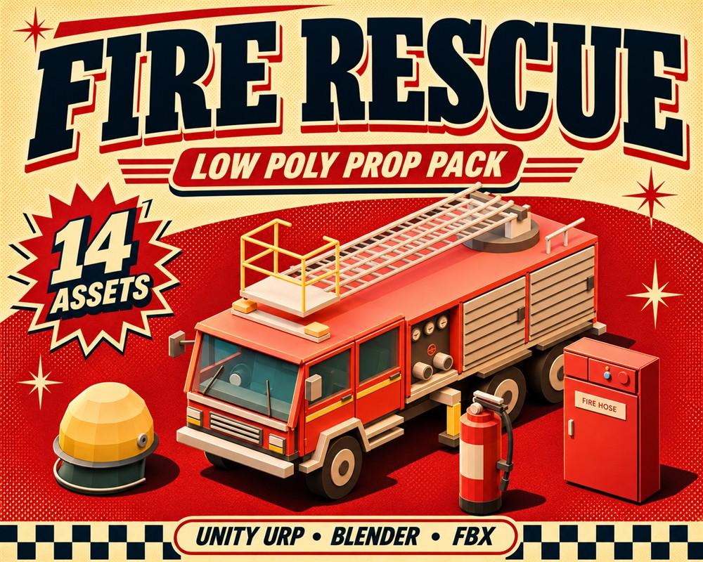
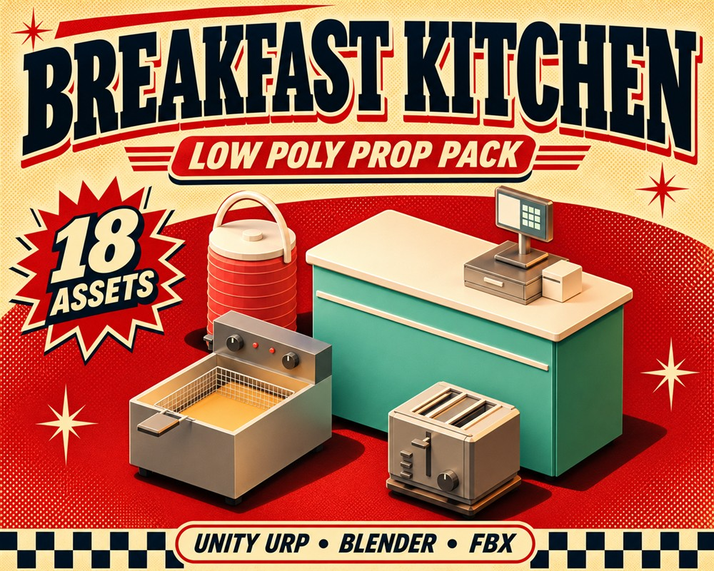
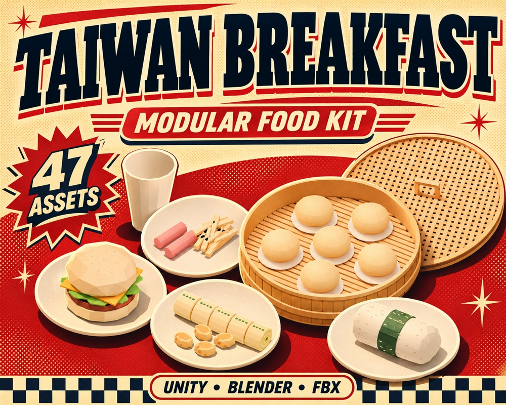

ABANDONED
RESEARCH LAB
廢棄研究所道具
Lab equipment, hollow containers and hinged doors.
實驗設備、中空容器與可開門櫃。建築與山林僅為展示背景，不包含於素材包。
32 assembled props · 11 moving parts
Blender + FBX + Unity URP
小巧多邊形，裝進你的遊戲。
Small polygons. Ready for your next scene.
Click a thumbnail. Rotate and zoom one model at a time.
點縮圖、旋轉、縮放，逐件查看實際模型。

廢棄研究所道具
Lab equipment, hollow containers and hinged doors.
實驗設備、中空容器與可開門櫃。建築與山林僅為展示背景，不包含於素材包。
32 assembled props · 11 moving parts
Blender + FBX + Unity URP

城市店面素材
A dressed street with moving cabinets and shutters.
完整街道場景，搭配可開關的電箱門與鐵捲門。
43 Prefabs · 18 signs / 招牌
Blender + FBX + GLB + Unity URP

消防救援素材
Telescopic truck, hinged visor and stocked cases.
伸縮雲梯車、可掀面罩與附內部物品的工具箱。
14 models · 14 Prefabs
Blender + FBX + Unity

早餐店廚具
18 assembled props. Counter + POS, fryer, tea urn and useful moving parts.
18 款完整道具，含櫃台、POS、油炸鍋、茶桶與可動部件。
18 models · 18 Prefabs
Blender + FBX + Unity

台式早餐食物
Food, empty cups and four bamboo steamer bun sets.
食物、空杯與四種包子饅頭蒸籠組，自由搭配。
47 assets · 47 Prefabs
Blender + FBX + Unity
Purchase on itch.io and extract the latest ZIP.
於 itch.io 購買，解壓縮最新版本。
Unity: Assets → Import Package → Custom Package.
選擇套件中的 .unitypackage，完整匯入。
Open the showcase scene. Drag a complete Prefab into your scene.
開啟展示場景，將完整 Prefab 拖進自己的場景。
Unity 6000.6.7f1 tested / 已測試。研究所、城市店面、消防與廚具使用 URP；食物包使用 Built-in。
Moving parts: select the Prefab root and use its Inspector controls. Blender: open the included .blend. / 可動部件：選取 Prefab 根物件，使用 Inspector 控制；Blender 直接開啟 .blend。
Urban kit: open Street_Showcase; use OPEN / CLOSE / RESET on a prop root. / 城市素材包：開啟 Street_Showcase，選取物件根節點即可操作。
Research lab: open ResearchLabProps_Showcase, press Play → Walk; WASD / RMB / E. / 研究所：開啟展示場景，按 Play → Walk；WASD 移動、按住右鍵看向、E 互動。
Full guide inside each pack. Gameplay systems are not included. / 完整教學隨附於套件，不含完整遊戲系統。
CREATE COMMERCIALLY / 可商用
Use in finished projects. Do not resell or redistribute source assets.
可用於成品專案；不可轉售或散布原始素材。
LET’S TALK / 聯絡我
直接來信洽詢購買優惠。 / Email for direct-purchase offers.
arial5690@gmail.com ↗